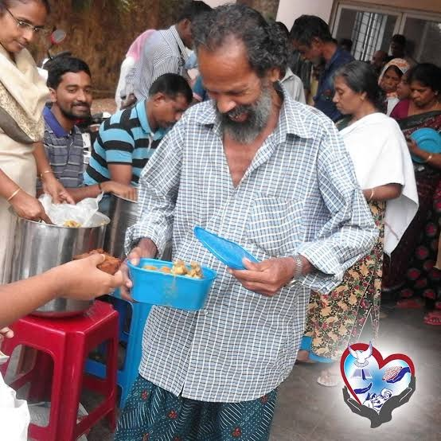
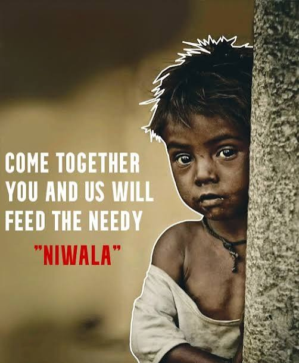
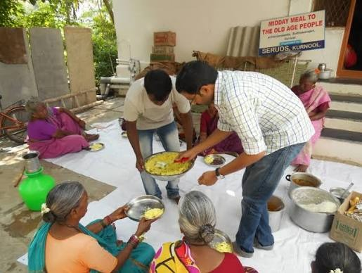
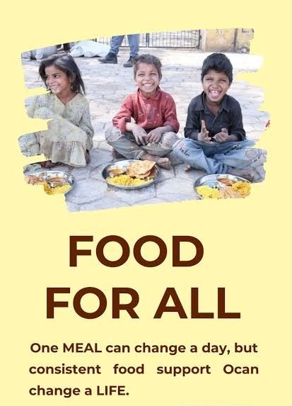

Dignified Meals for Elders
Freshly packed hot meal boxes distributed directly to elderly citizens and patient attendants outside hospitals.
FoodBridge connects banquet halls, bakeries, and wholesale mandis directly with verified food-relief NGOs, community langars, and dharamshalas across Lucknow for same-day food recovery.

Verified tracking across Lucknow Urban Corridor (Hazratganj, Chowk, Yahiyaganj, Dubagga Mandi & Charbagh).
Real-world food recovery and midday meals delivered to shelters, children, and elderly citizens across Lucknow.
Freshly packed hot meal boxes distributed directly to elderly citizens and patient attendants outside hospitals.

Connecting surplus food donors with street children and slum families in need across urban clusters.

Volunteers serving wholesome hot khichdi, rice, and dal directly to senior residents at community shelters.

Consistent, daily nutrition support for children in community centers, transforming lives one meal at a time.
Real-time visual map of surplus food pickup locations, verified NGOs, and community shelter lodges.
Filter fresh food by city, Lucknow locality, diet category, and urgency.
List surplus items with mandatory Government ID Verification for safety compliance.
Curated contact directory of verified hunger-relief organizations, shelters, and community lodges.
ℹ️ Note: Dharamshala rates and room availability reflect typical visitor rates and should be verified directly. NGO registrations validated against public NITI Aayog Darpan portals.
Real-time 5-stage progress monitoring for food recovery missions.
Pre-donation verification checklist to maintain wholesome nutrition.
Three simple steps from surplus table to community meal.
Banquets, caterers, or households list surplus food with ID proof, quantity, and collection deadlines.
Our Lucknow algorithm pairs the donation with nearby verified langars, dharamshalas, or food banks.
Volunteers collect the food in temperature-insulated crates and deliver it straight to people in need.